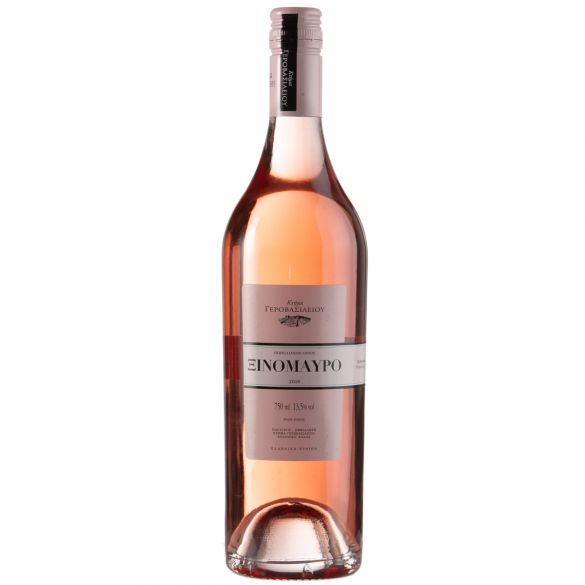
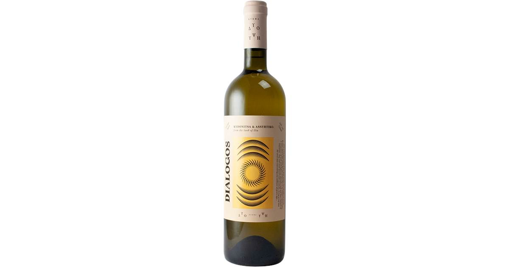
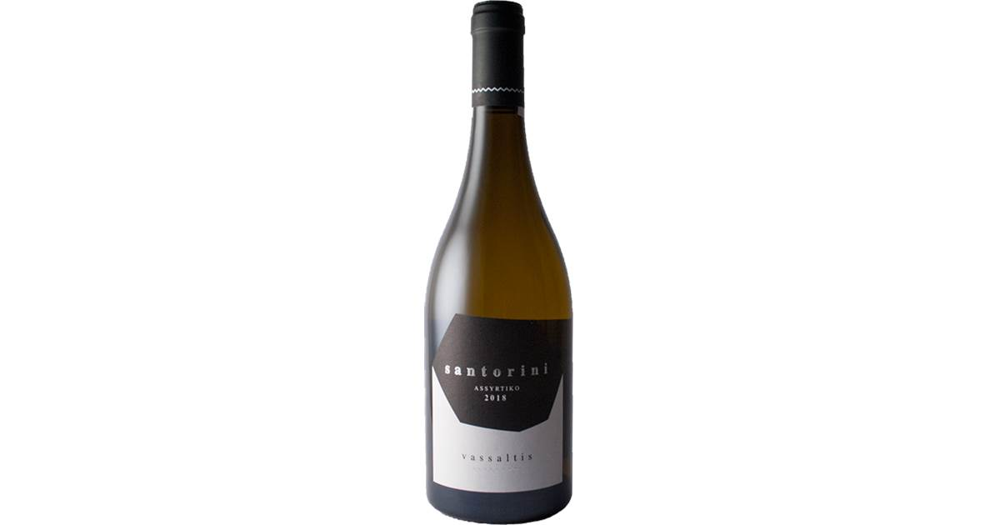
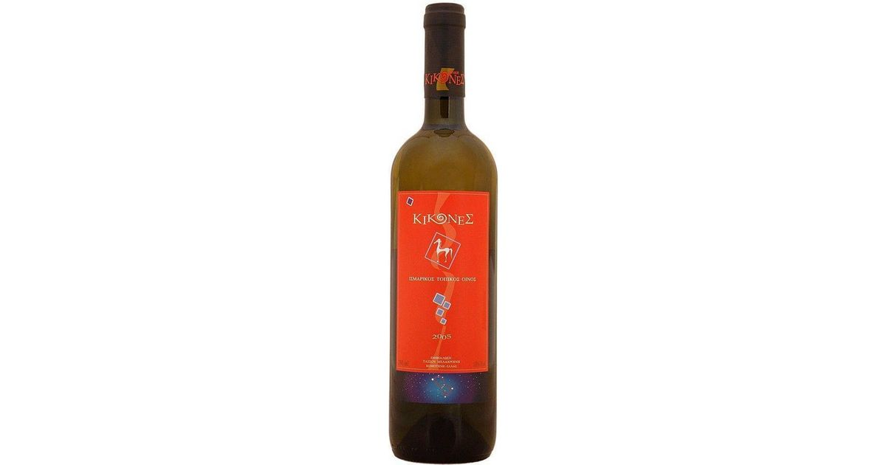
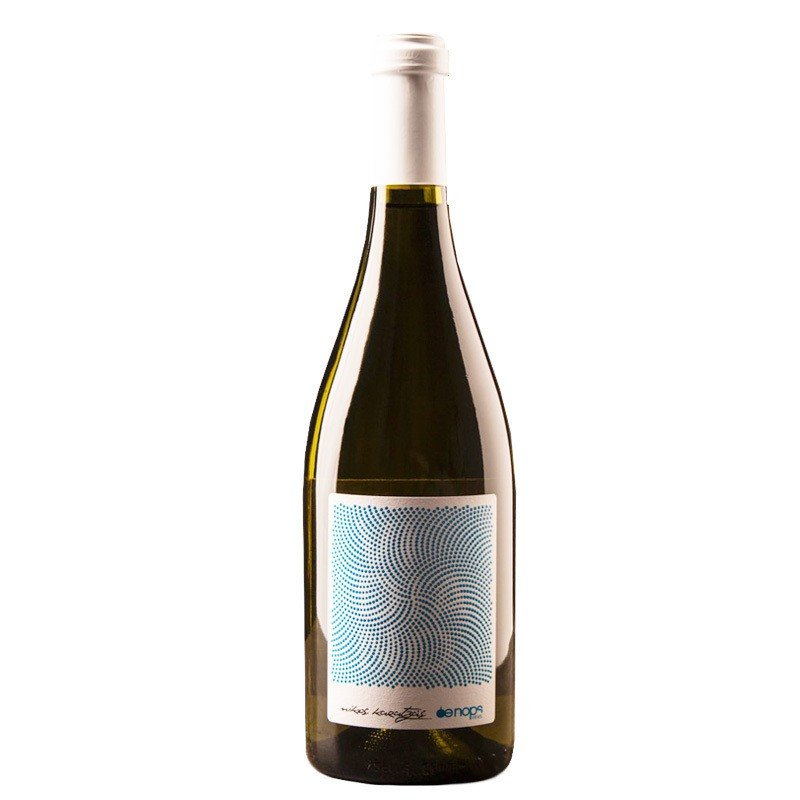
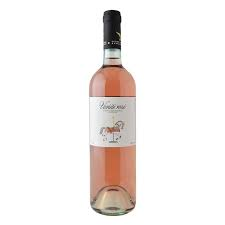

Κτήμα Γεροβασιλείου - Ξινόμαυρο
Η χαρισματική ποικιλία που ακούει στο όνομα ξινόμαυρο μας δείχνει το φινετσάτο πρόσωπο της από το κτήμα Γεροβασιλείου.
Μετά την έκθλιψη, ο μούστος παραμένει με τα στέμφυλα για λίγες ώρες σε χαμηλή θερμοκρασία και στην συνέχεια η οινοποίηση εκτυλίσσεται σε ανοξείδωτες ψυχόμενες δεξαμενές στους 18 °C. Το κρασί παραμένει με τις οινολάσπες του για μερικούς μήνες, κερδίζοντας σε δομή και σώμα. Έντονο αρωματικό χαρακτήρα με αρώματα εσπεριδοειδών ροζ γκρέιπφρουτ, και κόκκινων μικρών φρούτων. Μέτριο στο στόμα, με πολύ καλή οξύτητα και ισορροπία και ευχάριστη αρωματική επίγευση.περισσότερα

Κτήμα Δύο Ύψοι - Διάλογος Λευκός
Εδώ χωράει νέα σύσταση!!
Το πρώην κτήμα Κόκκαλη εξαγοράστηκε από τους οινικούς συνοδοιπόρους Γεροβασιλείου και Τσακτσαρλή που βρίσκεται στον νομό Ηλείας και πιο συγκεκριμένα στα Σκαφιδιά.
Σε ένα blend που σκοτώνει ,- ασύρτικου και κυδωνίτσας - αυτό το κρασί είναι ότι πρέπει για όλες τις ώρες.
Ισορροπημένο με νευρική οξύτητα και ζουμερό ξεχειλίζει φρεσκάδα και αρώματα.περισσότερα

Αμπελώνες Βασάλτη - Σαντορίνη
Εκρηκτική και ατίθαση η Σαντορίνη από το οινοποιείο Βασάλτη από το αγαπημένο μας νησί. Εδώ να αναφέρουμε πως είναι ένα από τα νεότερα οινοποιεία της Σαντορίνης, το οποίο έχει καταφέρει να είναι σημείο αναφοράς για κάθε οινόφιλο και επαγγελματία αλλά και σαν τυπικό δείγμα Σαντορίνης.
Αρώματα λευκόσαρκων και άγουρων κίτρινων φρούτων όπως το κίτρο και το γκρέιπφρουτ.
Χαρακτηριστικό του η βρεγμένη πέτρα και τσακμακόπετρα.
Πλούσιο στο στόμα με οξύτητα που μασάς με αλμυρή επίγευση που σου γαργαλάει τον ουρανίσκο.περισσότερα
Αρώματα λευκόσαρκων και άγουρων κίτρινων φρούτων όπως το κίτρο και το γκρέιπφρουτ.
Χαρακτηριστικό του η βρεγμένη πέτρα και τσακμακόπετρα.
Πλούσιο στο στόμα με οξύτητα που μασάς με αλμυρή επίγευση που σου γαργαλάει τον ουρανίσκο.περισσότερα

Κτήμα Κίκονες -Chardonnay
Με κλασσική οινοποίηση που το ⅔ του όγκου χρησιμοποιήθηκε η μέθοδος του battonage δηλαδή η πολύμηνη ανάδευση των οινολασπών σε δεξαμενή και βαρέλι. Το αποτέλεσμα αυτής της διαδικασίας είναι η λιπαρότητα που περιμένεις να βρεις. Στην μύτη λευκόσαρκο ροδάκινο, lychee και ανανάς και επίγευση όλο φρεσκάδα.
Το μπόνους εδώ είναι να αγοράσεις παραπάνω από 1 φιάλη για να την παλαιώσεις και να την πιείς μεταξύ 2029-2031.
περισσότερα

Oenops Wines - Βιδιανό
Ο αγαπημένος σε όλους μας Νίκος Καρατζάς αποφάσισε να πάρει σταφύλια από ορεινούς αμπελώνες του Ηρακλείου της Κρήτης και να τα οινοποιήσει πίσω στην Δράμα.
Ένα υπέροχο κρασί με αρώματα βερύκοκου, κυδωνιού και μια νότα βοτάνων στο βάθος.
Ορυκτότητα και οξύτητα στην μακρά επίγευση του.περισσότερα

Κτήμα Γεροβασιλείου - Ξινόμαυρο
'Αμεσο, γοητευτικο, ημίξηρο ροζέ κρασί από την Καβάλα και τους ορεινούς αμπελώνες Λαλίκου. Η κλασική -για ροζέ κρασιά- ποικιλία Grenache Rouge προσδίδει αρώματα φράουλας, κερασιού και λουλουδιών στο Variete, ενώ το στόμα ακολουθεί στο ίδιο ανάλαφρο μοτίβο, με ωραία ισορροπία φρεσκάδας-γλυκύτητας και φρουτώδη επίγευση . περισσότερα